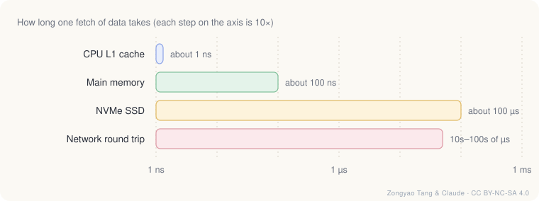
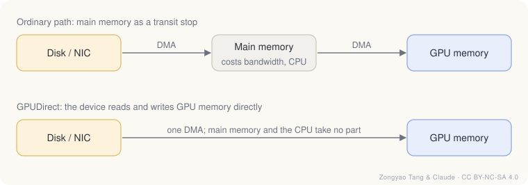
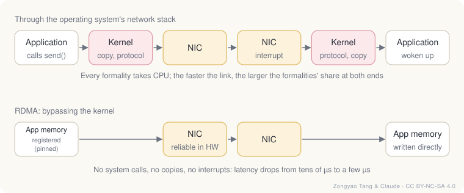

The thread: the further away data is kept, the slower it is, by orders of magnitude → data in memory is not "fixed" in one place, and must be pinned before it is handed to a device → a device can move data on its own, without the CPU handling every byte → while going through the operating system's network stack, every packet passes through many formalities → finally processes and threads, which explain why data loading is designed the way it is.
Part 0 · The big picture and measurement0.3 A refresher on systems fundamentals
Translated by AI (Anthropic's Claude) from the Chinese edition. The Chinese original is the reference.
This unit answersWhich operating-system and computer-organisation ideas will we need later?
Follows 0.1: every stage of the pipeline stands on these foundations. This unit reviews only what is used later, connecting what you learned in operating-systems and networking courses to today's GPU training.
- The memory hierarchy: each level further away is one to three orders of magnitude slower
- The operating system moves data around in memory; it must be "pinned" before it goes to a device
- DMA: the device moves the data itself; the CPU only gives the order
- Through the operating system's network stack, every packet passes many formalities
- Processes, threads and the GIL: why data loading uses several processes
Explanation
1The memory hierarchy: each level further away is one to three orders of magnitude slower
The cache nearest the processor takes about 1 nanosecond per access; main memory about 100 nanoseconds; a solid-state drive about 100 microseconds; fetching data over an ordinary network takes tens to hundreds of microseconds. Between levels the difference is not a few times but tens to thousands of times.
Storage in a computer is layered for a simple reason: storage that is both fast and large cannot be built, or costs too much. So a little very fast storage holds the most used data, and a lot of slower storage holds the rest.
Rough orders of magnitude (hardware varies; remembering the order of magnitude is enough):
- CPU level-1 cache: about 1 nanosecond, tens of KB
- Main memory: about 100 nanoseconds, tens to hundreds of GB
- NVMe solid-state drive: about 100 microseconds (100,000 nanoseconds)
- One ordinary network round trip inside a data centre: tens to hundreds of microseconds, the same order as a solid-state drive

Each level further away is one to three orders of magnitude slower (orders of magnitude, not exact values) The hierarchy works because of locality: within a short span of time, a program tends to touch the same small piece of data again and again (temporal locality), or data next to it (spatial locality). So keep what was just used, and what lies next to it, in the fast level, and most accesses land somewhere fast.
The other way round, if a program's access pattern breaks locality, say by jumping randomly around a large array, every access goes to the slow level and the speed drops tens of times, while the code looks no different at all.
The GPU has a memory hierarchy of its own (registers, shared memory, caches, GPU memory; see 3.3) that follows exactly the same rule. Every technique in the course with "tiling", "cache" or "never written out" in it works on the same question: how to keep data close, and use it many times while it is there.
An analogyStretch 1 nanosecond to 1 second: fetching from cache takes 1 second, from memory 2 minutes, from a solid-state drive more than a day, and a fetch over an ordinary network a day to several days.
So "keep the data you need close" is the first principle of all performance work. Tiling on the GPU, Flash Attention and the KV cache are, at heart, all this one rule.
Used later in The operating system moves data around in memory; it must be "pinned" before it goes to a deviceView, transpose and slicing change only the description, not the dataDistributed checkpoints: each process saves its own, without making training stop and waitLarge-scale data loading: pack huge numbers of small files into shards, and read them sequentially- We know which level the data is in. Next, how data goes from memory to a device (a GPU, a network card). There is an easily overlooked condition here.
2The operating system moves data around in memory; it must be "pinned" before it goes to a device
The memory addresses a program sees are virtual; the operating system may at any moment move the physical page behind them, or even swap it out to disk. For a device to read and write a piece of memory directly, that memory must be locked at its physical location. This is called pinned (or page-locked) memory.
First, virtual memory. Each process believes it has a large stretch of contiguous memory to itself; in fact the operating system cuts these "virtual addresses" into pages (usually 4KB each) and maps them onto pages of physical memory. This mapping gives the operating system a lot of freedom:
- when physical memory is tight, it writes rarely used pages to disk (swapping out) to make room;
- to reduce fragmentation, it moves a page of data from one physical location to another.
The program never notices, because it only knows virtual addresses.
A device is different. When a GPU or a network card fetches data from memory directly (DMA, in the next card), it uses physical addresses. If the operating system moved the page halfway through a transfer, the device would read the wrong content. So before handing memory to a device, you must tell the operating system: these pages may not be swapped out and may not move. That is "pinning".
In PyTorch:
- An ordinary tensor lives in pageable memory. On
.cuda(), the CUDA driver first copies the data into a pinned staging area of its own, then sends it to the GPU from there. Two copies, and the CPU is tied up while it happens. - A pinned tensor can be sent directly, with one copy, and the copy can be asynchronous (
non_blocking=True): the CPU starts the transfer and goes off to do something else while the hardware finishes it in the background.
Pinning is not free. The operating system can no longer shuffle pinned memory around; pin too much and the whole machine has less usable memory and may even slow down. So pin only the data that is about to go to the GPU.
You will meet this again with RDMA: a network card that reads and writes an application's memory directly also needs that memory "registered" first, and the first thing registration does is pin it.
Source walkthrough: what the DataLoader's pin_memory does
A good first place to read the source: the code is short, and every line maps onto what was just explained.
Where to look:
torch/utils/data/_utils/pin_memory.pyin the PyTorch repository, and the part oftorch/utils/data/dataloader.pythat creates the thread.The main flow (hold on to this line as you read):
- The DataLoader's worker processes put finished batches into a queue.
- With
pin_memory=True, the main process starts one more thread, which runs_pin_memory_loop: it keeps taking batches from the queue, calls.pin_memory()on each tensor in them, and puts them into another queue. - What the training loop takes from the second queue is already pinned.
Three questions worth thinking about (the answers are all in the card above and the last card of 0.3):
- Why is pinning done in a thread of the main process and not in the worker processes? (Pinned memory belongs to one process; pinned in a worker, it would have to be copied again on its way back to the main process.)
- Why can a thread be used without worrying about the GIL? (The main work of
.pin_memory()is a memory copy, done in C++, which releases the GIL while it runs.) - What happens if you set
pin_memory=Truebut leave outnon_blocking=Truein.cuda()? (One copy fewer, but the transfer is still synchronous; the CPU waits for it, and the benefit of overlap is lost.)
What it means when troubleshooting: if the profiler shows the threads around
pin_memoryvery busy, or long waits for a batch, pinning itself has become the bottleneck, usually because batches are large or memory is tight. We come back to this code in 2.4 (the data supply); when you read it, check the details against the source of that time.An analogyLike books in a library: normally the librarian may move books around freely, and you always find one by its call number. But if a courier is to come and collect a particular book directly, you first have to tell the librarian: do not move this book until it has been picked up.
So when copying data to the GPU, starting from pinned memory it can be sent directly; starting from ordinary memory, the driver first has to copy it into a pinned staging area, one copy more. That is where pin_memory=True in the DataLoader comes from.
Used later in DMA: the device moves the data itself; the CPU only gives the orderProcesses, threads and the GIL: why data loading uses several processesThe GPU is waiting for data: check the data pipeline firstpin_memory plus non_blocking: letting the copy to the GPU overlap with computationSourcesBest Practices §9.1 Data transfer between host and device- Once memory is pinned, the device can come and take it directly. That "directly" deserves a few more words, because it is the prototype of several later technologies.
3DMA: the device moves the data itself; the CPU only gives the order
Direct memory access (DMA) means a device (GPU, network card, disk controller) reads and writes main memory itself, without the CPU handling the data byte by byte. The CPU does three things: tells the device where the data is and how long it is, and then gets notified when the device has finished.
Without DMA, reading data from disk into memory goes like this: the CPU reads one word from the device, writes it to memory, reads the next word. The CPU is busy for as long as the data is large.
With DMA the flow becomes:
- The CPU tells the device: "Write this 1 GB of data to memory at this address."
- The device writes the data into memory over the bus by itself. Meanwhile the CPU is free.
- When it is done, the device sends an interrupt to tell the CPU.
The CPU goes from porter to dispatcher. This is also why the previous card's pinning matters: the device is given physical addresses, and the memory must not move during the transfer.
Copies between the GPU and the host are DMA. That is why a copy from pinned memory can be asynchronous: the CPU starts it and does not wait.
Push one step further. In the ordinary flow, data from disk to GPU passes through main memory: disk →(DMA)→ main memory →(DMA)→ GPU memory. From the network to the GPU it is the same: network card → main memory → GPU memory. Main memory is only a transfer station here, and each transfer costs memory bandwidth and CPU management overhead.

The two paths differ only in the station in the middle The GPUDirect family of technologies removes this station:
- GPUDirect Storage: an NVMe drive writes data straight into GPU memory.
- GPUDirect RDMA: a network card reads and writes GPU memory directly. In multi-machine training, gradients leave one GPU's memory, pass through the network card and the cable, and land directly in the memory of a GPU on another machine, with neither side's main memory nor CPU involved.
Part 5, on high-speed interconnects, picks up from here.
An analogyLike moving house: you do not carry the boxes one by one yourself; you tell the removal company "from this room to that room", and they ring you when it is done. Meanwhile you can do something else.
So moving large blocks of data takes no CPU computing time and can overlap with other work. Push the idea to the limit and two devices transfer directly to each other without touching main memory at all: GPUDirect Storage (disk straight to GPU memory) and GPUDirect RDMA (network card straight to GPU memory).
Builds on The operating system moves data around in memory; it must be "pinned" before it goes to a deviceUsed later in Through the operating system's network stack, every packet passes many formalitiespin_memory plus non_blocking: letting the copy to the GPU overlap with computationTwo road networks inside the machine: general-purpose PCIe and GPU-only NVLinkThe "distance" between two devices decides which road the data takes- A device can read and write memory directly. What about moving data between two machines? The traditional way goes through the operating system, at a higher cost than you might think.
4Through the operating system's network stack, every packet passes many formalities
Sending a piece of data with an ordinary socket: the application makes a system call into the kernel; the data is copied from the application's memory into a kernel buffer; the kernel adds TCP and IP headers and handles acknowledgements and retransmission; only then does it go to the network card. The receiving side walks the same path backwards.

The same send: how many formalities on each of two paths The networking you studied was the TCP/IP stack. It is implemented in the operating system kernel, and one send goes through these steps:
- System call: the application calls
send(), and the CPU switches from user mode to kernel mode. One switch alone takes several hundred nanoseconds to a microsecond. - Copy: the kernel copies the data from the application's buffer into its own socket buffer.
- Protocol processing: cutting into packets, computing checksums, adding headers, keeping the congestion window, handling acknowledgements and retransmission. All done by the CPU.
- Interrupts: when data reaches the receiver, the network card raises an interrupt; the kernel handles it and copies the data to the application, perhaps also waking a sleeping process.
When the network ran at 1 Gb/s, these costs were negligible next to the transfer time. But today's cluster networks run at 100 to 400 Gb/s: moving 1 MB across the link takes only tens of microseconds, while one memory copy and one round of protocol processing at each end add up to more than that. The CPU becomes the bottleneck; a core processing the protocol at full speed cannot fill a link.
RDMA (remote direct memory access) removes these four, one by one:
- Kernel bypass: the application hands the description of what to send straight to the network card, with no system call.
- Zero copy: the network card takes the data straight from the application's memory (which must be registered first, that is, pinned) and writes it straight into the other application's memory.
- The protocol runs in the network card: reliable delivery is done by the card's hardware, using no CPU.
- The receiving CPU is not involved: data lands directly in the designated memory, with no interrupt to wake anyone.
Latency drops from tens of microseconds to a few, with almost no CPU used. Replace "the application's memory" with "GPU memory" and you have GPUDirect RDMA from the previous card.
Here we only want one impression: with a fast network, the bottleneck is not on the wire but at the two ends. Part 5 explains how RDMA works in detail, the difference between InfiniBand and RoCE, and how to troubleshoot it.
An analogyLike sending a parcel abroad: forms, customs, security, sorting, each with its own queue. The parcel itself flies for a few hours; the formalities take days.
So once the network itself is fast, the time goes into these formalities. RDMA's approach is to let the application talk to the network card directly, bypassing the kernel, with no more copying. InfiniBand and RoCE, used in fast training clusters, both take this road.
- System call: the application calls
- Finally, back to data preparation at the very front of the pipeline. Why is it designed as "one main process plus several worker processes"? The answer lies in a feature of the operating system and of Python.
5Processes, threads and the GIL: why data loading uses several processes
Threads share one memory and are cheap to switch; processes each have their own memory, isolated from each other. Python has a global interpreter lock (GIL): only one thread at a time can execute Python code. So to run data preprocessing written in Python on several CPU cores at once, you have to use several processes.
First the two concepts. A process is the unit the operating system allocates resources to; each process has its own memory space. A thread is a flow of execution inside a process; threads of the same process share memory. Exchanging data between threads is easy (they read the same memory); between processes it needs special mechanisms.
In C++, multithreading makes full use of many cores. But Python (the standard CPython interpreter) has the GIL: to protect the interpreter's internal data structures, only one thread at a time may execute Python bytecode. So a computation written in Python uses one core however many threads you start.
Two cases escape the GIL:
- a thread waiting for IO (reading a file, waiting for the network) releases the GIL;
- a function implemented in C/C++ may release the GIL itself while it runs (most of PyTorch's tensor operations do).
Data preprocessing, though, is very often plain Python code: parsing samples, tokenizing, all kinds of transforms. So the DataLoader chose multiple processes: each worker is a separate process, with its own interpreter and its own GIL, and they truly run in parallel.
Multiple processes cost three things:
- Passing data takes effort: a batch a worker has prepared must be handed to the main process. PyTorch passes tensors through shared memory, which avoids serialising large blocks of data, but there is still overhead.
- Memory: each process has its own interpreter and its own imported libraries; a large dataset object may be copied several times as well.
- Slow start: creating the processes at the start of each epoch takes time (
persistent_workers=Truekeeps them alive).
So choosing num_workers is a trade-off: too few, and the CPU is underused while the GPU waits for data; too many, and the processes fight over CPU and memory and things slow down. The usual way is to start from 0, raise it step by step, plot the throughput, and find the point where it stops rising.
(Newer Python versions are starting to offer builds without the GIL, so this may change, but mainstream environments are still like this for now.)
Further reading: what shared memory saves, and what it still costs
Without sharing. Two processes cannot see each other's memory. The plainest way to hand a batch made by a worker to the main process is serialisation: turn the tensor into a string of bytes (pickle), write it into a pipe between the two processes, and have the main process read it out and rebuild the tensor.
Take 64 colour images of 224×224: as float32 the batch is 38.5 MB. Those 38.5 MB are copied several times: into a byte string, into the kernel's pipe buffer, out of the pipe, into a new tensor. A pipe passes a few tens of KB at a time, so each side also reads or writes a few hundred times.With sharing. The worker builds the batch directly in a block of shared memory (the default collate does exactly this inside a worker), and the queue carries only a "handle" to that block, with metadata such as the shape and the type. You can compare the two sizes:
import pickle, torch import torch.multiprocessing # tensors go between processes by handle from multiprocessing.reduction import ForkingPickler x = torch.rand(64, 3, 224, 224) # 38.5 MB print(len(pickle.dumps(x))) # about 38.5 million bytes: the data itself x.share_memory_() # move it into shared memory print(len(ForkingPickler.dumps(x))) # a few hundred bytes: a handle and the shape
38.5 MB becomes a few hundred bytes: that is what "avoids serialising large blocks of data" means.
What still costs. The data no longer goes through a pipe, but the following are still paid:
- A new block of shared memory for every batch. For each batch it builds, the worker asks the operating system for a new block: it creates a file under /dev/shm, sets its size, and maps it into its own address space. Fresh memory triggers a page fault the first time each page is written, and the kernel allocates the page and fills it with zeros. 38.5 MB is 9408 pages of 4 KB. Ordinary memory, once freed, is kept by the allocator for reuse, so its pages are already there; shared memory is new for every batch, and this account is paid each time.
- The copy that makes the batch remains. Copying the samples one by one into this block is the work of making a batch and cannot be saved. In the main process, with
pin_memoryon, there is one more copy into pinned memory (the source walkthrough on this unit's second card). What is saved is the copies through the pipe. - Handing over the handle. In the default method on Linux (file_descriptor), the handle is a file descriptor. A descriptor cannot be written into a byte stream and has to be handed over specially: the main process connects back to the worker at the address in the handle, receives the descriptor over a Unix socket, and maps the block in. The first read there also causes page faults, though without zeroing, which makes them much cheaper. All this happens once per tensor: a batch of dozens of separate tensors (variable-length sequences not padded into one big tensor, say) does it dozens of times.
- Clean-up. When the main process is done with a batch it unmaps the block and closes the descriptor; the memory goes back to the system only after both sides have let go.
- Whatever is not a tensor is still serialised. Strings, lists of file names and Python objects in dictionaries in the batch still travel as bytes.
Measured on a cloud virtual machine with 2 cores (illustrative; another machine will give other figures): copying these 38.5 MB into reused ordinary memory takes about 5 ms; into a new block of shared memory, 20–30 ms, the difference being mostly those 9408 page faults. With the worker and the main process running together, passing by shared memory took about 25 ms per batch; serialising and passing through a pipe, about 65 ms.
Most of this is paid in the workers. Like the data preprocessing, it is paid by the worker processes in parallel and does not take time from the training loop directly; but it uses the workers' CPU, and with too few workers it shows up as the GPU waiting for data (2.4).
Two common traps.
- /dev/shm is too small in containers. Docker gives it only 64 MB by default. A larger batch, a few workers, each prefetching two batches by default, and it is soon exceeded: workers exit with a bus error, and PyTorch suggests
This might be caused by insufficient shared memory (shm). Start the container with--shm-size=8g(or--ipc=host); in Kubernetes, mount an in-memory emptyDir at /dev/shm (the job YAML in 8.1 has one). - Running out of file descriptors. Each live shared tensor holds a descriptor, and with enough of them you get
Too many open files. Raiseulimit -n, or share by file name instead:torch.multiprocessing.set_sharing_strategy('file_system').
What you can do.
- Make a batch out of a few large tensors rather than dozens of small ones.
- Keep images as uint8 in the workers and do the conversion to floating point and the normalisation on the GPU: a quarter of the bytes to pass.
- Leave large Python objects out of what you return.
An analogyA kitchen with only one knife (the GIL): hire as many cooks as you like, only one can chop at a time. To chop in parallel, you need more kitchens (processes), at the price of carrying finished dishes back and forth.
So num_workers in the DataLoader is a number of processes. More processes put the CPU to use, but passing data between processes has a cost and takes more memory. More workers is not always better; measure to find the knee.
Builds on The operating system moves data around in memory; it must be "pinned" before it goes to a deviceOne training step is a pipeline of stages in series; the slowest stage sets the speedUsed later in One operator call passes through five layers: bindings, dispatcher, autograd, backend implementation, CUDAThe GPU is waiting for data: check the data pipeline firstThe birth of a batch: sampling, fetching samples, collating, pinning, onto the GPUNUMA: processes, memory and devices should be on the same side
Putting it together
The memory hierarchy makes "move data close" the first principle, always; pinned memory lets a device access data directly; DMA lets a device do its own moving; the kernel network stack's layers of formalities are exactly what RDMA goes around; multiple processes are how Python prepares data in parallel. When we get to pin_memory, GPUDirect, RDMA and the DataLoader later, we will come back here.
Test yourself
Without looking back at the explanation, say it in your own words.
- Roughly what order of magnitude is the access latency of each level, from cache to network? What does that mean for performance work?
- What is pinned memory? Why is copying to the GPU faster from pinned memory?
- What problem does DMA solve? How is GPUDirect related to it?
- When sending and receiving data with traditional sockets, where does the time go? How does RDMA get around these costs?
- Why does the DataLoader use multiple processes rather than threads? What do multiple processes cost?